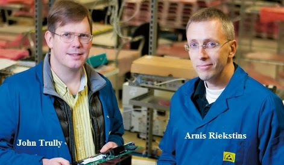
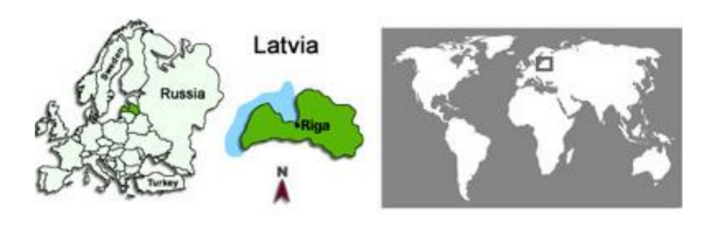
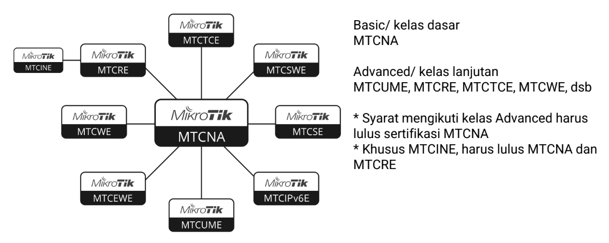

MikroTik didirikan pada tahun 1996 oleh John Trully dan Arnis Riekstiņš. Awalnya mereka mengembangkan solusi jaringan berbasis Linux untuk menyediakan akses internet wireless yang efisien dan terjangkau di Latvia.
Seiring perkembangan teknologi, MikroTik tidak hanya mengembangkan sistem operasi jaringan, tetapi juga memproduksi perangkat keras router sendiri yang kini digunakan secara global.

(sumber gambar:Modul MTCNA-2025-Citraweb)
MikroTik berasal dari Latvia, negara di kawasan Baltik, Eropa Utara. Kantor pusatnya berada di kota Riga. Walaupun berasal dari negara kecil, produk MikroTik telah digunakan di berbagai negara di dunia.
Nama MikroTik berasal dari kata “Mikro” yang berarti kecil dan “Tik” yang berkaitan dengan jaringan. Filosofinya adalah menyediakan solusi jaringan kecil yang efisien namun memiliki kemampuan besar.
RouterOS adalah sistem operasi berbasis Linux yang digunakan untuk mengubah perangkat menjadi router yang powerful.
RouterBoard adalah perangkat keras router buatan MikroTik yang sudah terpasang RouterOS.

(sumber gambar:Modul MTCNA-2025-Citraweb)
Sertifikasi dasar yang membahas IP Address, DHCP, NAT, Firewall, dan Wireless dasar.
Fokus pada routing lanjutan dan troubleshooting jaringan.
Fokus pada teknologi wireless dan optimasi jaringan nirkabel.
Fokus pada manajemen bandwidth dan traffic control.
Fokus pada manajemen user seperti hotspot dan PPP.
Level tertinggi yang membahas BGP dan desain jaringan skala besar.
← Kembali ke Halaman Materi